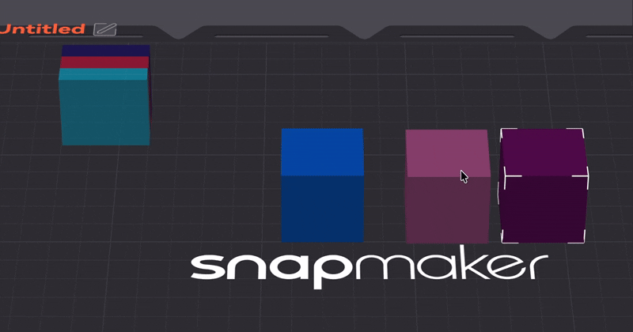
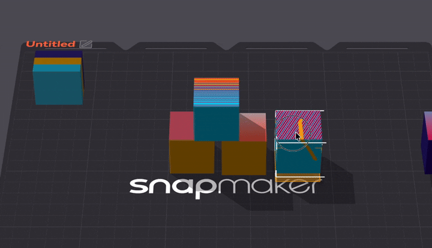
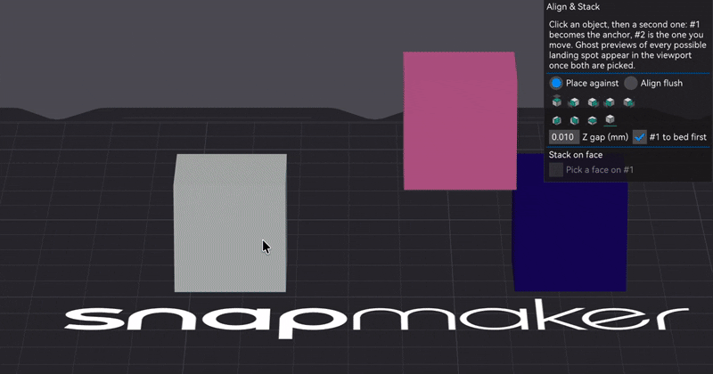

§7 · §17 — Placing
Align & Stack, and Gravity
Stock slicing assumes a few things that are only true when an object sits alone on the bed: that layer 0 is the bed, that below me is only my own previous layer, that support grows from the plate. Put two separate objects one on top of the other and all three break at once, quietly.
- True Objects
- Libre Mode opens the door
- 2.3.9, extended 2.4.0 and 2.4.3
The false bridge
Put a beam on two blocks, as three separate objects. The underside of the beam is resting on solid plastic, but the slicer only ever asks "is there anything of mine underneath this?". The answer is no, so it classifies the whole face as a bridge: bridge speed, bridge fan, bridge angle, and a surface finish chosen for spanning air over a face that is touching material.
Stock
Per-object. Below layer 0 is the bed or nothing. A face resting on a neighbour is a bridge over thin air, and support gets requested under it.
With True Objects
The slicer measures what is really underneath every surface, by area, not by object. The part resting on something solid prints as contact; the part genuinely over air still prints as a real bridge, in the same layer.
Gravity, live
Drag the block around. What the slicer measures is not a raycast under your cursor: it is a 2D footprint overlap against every candidate, then a handful of real raycasts against the candidate's actual mesh. Notice what happens over the hollow box, and over the gap.
Turning it on
Where Toolbar side button›True Objects: On/Off
The button appears once the Libre Mode master switch is on, but it is its own independent axis: turning Libre Mode's active state on or off does not turn True Objects on or off, and the reverse is also true. The way to hold it in your head is that Libre Mode opens the door to the fork's pro features; True Objects decides whether things fall.
Upgrading from an older build that had Libre Mode's floating active? True Objects is seeded to match it the first time, so existing floating and stacked projects keep working exactly as they did.
| Before (stock) | With True Objects |
|---|---|
| A face resting on another object becomes a false bridge, with bridge speed, fan and the wrong angle | The same face prints as a normal solid contact surface at the correct fill angle |
| An object's own floating first layer is always solid, even over open air | The part genuinely over air becomes a real bridge |
| Perimeter overhang is measured only against this object's own layer below | Measured against the real floor, so a wall resting on a neighbour is not flagged as overhang |
| Support is requested under a face that is actually resting on another object | No support requested there; the neighbour's top counts as ground |
| Elephant-foot compensation applied to any first layer, even a stacked one | Never applied to a face that is not touching the bed, so stacked contact faces keep their true size |
| PerObject Support is opt-in per object | Forced on for every object while True Objects is active. Nothing is overwritten: turn it off and each object's own setting is as you left it |
The clearest way to see it working is an object resting partly on another and partly hanging over open air. That shows both in the same layer: solid where it is supported, bridge where it truly is not.
If your stacked pieces are already combined into one Assembled object, the slicer already sees the whole stack as one body and always did. Gravity is specifically for pieces that stay separate objects on the plate.
How it measures the floor
The stock "is it floating?" warning used a blind heuristic: an empty first layer means the object floats. That is wrong the moment an object rests on top of another one, which has an empty first layer of its own and is not floating at all.
This build measures it instead. For an object whose lowest geometry starts above the bed, each instance is checked against the bed and against the top surface of every other object's instances: real Z gap, real XY footprint, per instance. An object stacked on another no longer gets a bogus warning, and a genuinely floating island still raises one, because the old blanket suppression that could hide real floaters is gone. The tree-support sharp-tail seed uses the same check.
That detector is the shared foundation: PerObject Support and Gravity are the same geometry asking different questions.
Snap & Drag
Where The magnet icon›in the plate's icon column, under the camera
With True Objects on, dragging an object can rest it on whatever it is really above instead of leaving it floating where you dropped it. Since 2.4.3 the settings live in a small panel behind the magnet: the master switch, Snap to bed, and Move selection as one block. It stays open while you work.
Before 2.4.3 these lived in an object's right-click menu, which meant they were only reachable for the selection that produced that particular menu. Select several objects and they simply were not there, which is exactly when they matter most. The magnet does not depend on the selection, so the problem is gone rather than patched.

How it decides where to land
Detection is by 2D footprint overlap, not a raycast under the cursor, so a corner that only barely overlaps a pillar is not treated as resting on it. The overlap has to clear a threshold before it engages, and a slightly lower one to stay engaged once it has. That hysteresis is what stops the object flickering up and down as you drag near a pillar's edge.
Once a candidate qualifies, its landing height is sampled with a handful of real raycasts against the candidate's actual mesh, not its flat bounding-box top. A hollow box with a tall rim and a low interior floor resolves correctly depending on where the overlap lands, instead of always reporting rim height. If several candidates qualify, the object rests on the highest real surface under it. If an object has more than one instance and they would land on pillars of different heights, the whole object uses the lowest of those targets, so one instance landing on something tall never silently drags the others up with it.
The landing indicator 2.4.0
While a drag is engaged the object hovers a little above its landing spot rather than sitting flat on it, so what is underneath stays visible, and that gap is filled with the evidence behind the decision:
- the corner marks of the box where the object will come to rest;
- the recognised zone, the exact patch being read as the height, highlighted on the surface it was found on;
- a translucent column between that zone and the object's underside;
- the sample points the height was actually taken from, as fat dots at their real hit heights;
- colour: cyan when another object caught you, amber when the plate did.
None of this takes part in the calculation. It is what makes aiming possible: when a large part refuses to catch a thin rim, the dots show you that the samples went through the opening instead of onto the rim.

Does the plate count?
By default yes. Switch Snap to bed off and only other objects can catch you: an object with nothing underneath keeps floating exactly where you dropped it, which is what you want while assembling something in mid-air. The plate never competes with a real object, because it is simply a floor of height zero and the highest surface under your footprint always wins.
This is the option that was called Snap & Drag: Allow Bed in 2.4.0–2.4.2. Same setting, same default, new home. With it off and nothing qualifying underneath, the object is left exactly where it is, so Snap & Drag only ever pulls something down onto a floor it actually finds. That keeps True Objects' "nothing auto-drops" promise.
Dragging several at once
By default a multi-object selection is resolved by stacks. Anything standing on another member of the same selection travels with it and keeps its exact relative height; anything with nothing of its own underneath resolves its own floor and falls independently. Pick up a stack of three plus a loose box, move them together, and the stack lands intact while the loose box drops to the plate, in the same drag. Two objects count as stacked when one overlaps the other's footprint and sits within about a millimetre of its top, so hand-built stacks that were never seated perfectly still hold together.
Sometimes that independence is the wrong answer: you are not placing parts, you are carrying an arrangement somewhere else and it has to arrive unchanged. Tick Move selection as one block and the whole selection becomes one rigid body. Nothing changes height relative to anything else, and the block falls until its first part meets a surface, then stops. Nothing is ever pushed through its own floor to make some other part land.
It is off by default, because parts falling independently is what Snap & Drag is for most of the time and it is what every earlier version did. The option only affects selections of more than one object or instance; a single object is a rigid body all by itself.
Align & Stack
Where Left-side gizmo toolbar›Align & Stack
Snap & Drag is for placing by hand. Align & Stack is for placing exactly. Click two objects in the scene: #1, clicked first, is the anchor; #2 is the one that moves. Click a third to swap out #2, since the gizmo only ever relates two objects and there is no chain to manage.
| Mode | What it does |
|---|---|
| Place against | #2 comes to rest touching the chosen face of #1. This is the stacking mode. |
| Align flush | #2's same-side face becomes coplanar with #1's, the way alignment works in a drawing program. |
A row of face and centre buttons picks which face or centre axis to work against, and the tooltip changes with the mode. Z gap (mm) sets a controllable gap between stacked objects, and Drop to bed (Z = 0) puts every ordered object back on the plate.

That preview is the part worth knowing about. All five face operations and the three centring ones are drawn live, at exactly the position they would land, computed with the same maths the click would run, so the preview cannot lie. Hover a cube for a tooltip, click it to run that placement immediately. No going back to the side panel to work out which abstract X− / X+ button means "behind".
Ghosts only show for a #1 + #2 pair currently on screen. From a camera angle where a given ghost is not really visible, its icon simply does not appear rather than showing up somewhere meaningless.
Align & Stack places the pieces exactly. Gravity is what then makes the slicer treat the touching face honestly instead of as a false bridge. Either one alone leaves half the job undone.
The catch
- Support does not land on other objects yet. It still grows from the bed or from the object's own body. Landing on the top of a neighbour is a future extension.
- Auto-arrange does not know about your stack. It can scatter a hand-placed arrangement across the plate, because it has no concept of "these are meant to stay stacked". Do not run it after stacking by hand.
- By-layer printing only. In sequential by-object printing a neighbour may not exist yet at a given height, so nothing is treated as floor there.
- Snap & Drag is vertical only. It detects downward, so it does not help with side-by-side mating inside Assemble View, which has no single "down".
- No chaining outside the selection. Moving an object that something else is resting on does not drag that object along. Only things picked up together move together.
- The magnet icon appears in Libre Mode only, and only on the Prepare plate.